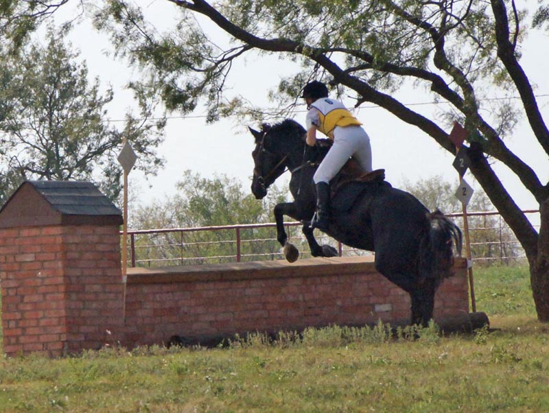

Novice Event at Curragh
Our dressage went great. We had energy and were relaxed. He could have been softer
to the bridle, but he knew jumping was coming up. Our score was a 31.
Stadium was a lot of fun. We were together on all our spots, I gave over fences
and he
appreciated it and didn't do any head shaking. We may have looked a bit fast, but
I let him pick his
pace and it never felt out of control. We were first after dressage and stadium.
Cross country was a big question. We hadn't schooled the day before and we've had
a lot of trouble
with ditches and banks in the past. I think that's all in the past. He cantered
over the ditch and banks
and didn't seem to even consider them. We ended up with two refusals at separate jumps.
One was in shadows
and he wanted to see it better, the other he wanted no part of, but reconsidered
and took it for me from a trot.
We didn't make time with the refusals, but we're getting closer. We cantered most
of the course and did a bit of
galloping. I don't think the move up in height really concerned him, but he's not
yet comfortable jumping a jump he's
not been shown. We got past the ditches, I think we can work through this. With
all that we took home a 3rd place ribbon.
Putting in studs for jumping.
First jump of the day I got a little ahead of the action.
Giving him his head which he appreciates and starting to get my hips back a little.

Pretty much where I want myself and him giving the extra effort. We've finally got
my stirrups shortened and it's helping my leg stay steady.
Leaping over the first jump on course. I tried to stay light and let him set the
pace.
Forward to the fences gave us great spots for take off. I told him each time I wanted
him to take off and he always agreed.
Reverting back in form because I got distracted with the simple lead change before
the fence. I wasn't looking for the fence and we had to do a little swerve to get
to it. He still put in a good effort without so much help from me.
The first jump of the in and out. We didn't knock anything down, but his hind legs
look close to this one. I could have a flatter back, but otherwise I'm just letting
him do his thing.
I didn't sit in the saddle and drive him to the fences because he was pulling me
to them. I kept my leg on for support and here I'm letting him set his stride for
the second part of the in and out. He's good in grid work and it shows in combinations.
Me not being so effortless. When it works, that's how it feel over the fences.
This feels easy to me, but since it was a combination we didn't worry about striding
so much. I think I still work too hard when it's a single jump and I want to get
the right spot.
Waiting to go on course. Miaren wasn't completely relaxed, but we just wandered
around until it was our time. I was curious to see how our ride would go. Lovely
to start out with no nerves trying to control things.
Maybe shouldn't stick my toungue out when we're galloping. I think I was thinking,
why'd he pick up the wrong lead to start.
He makes the bigger jumps look small to me. Nice and relaxed and not clutching.
The worst he got with his head. I wasn't pulling and put my leg on and he didn't
need to toss his head because he could trust I wouldn't be in his face over the
fences.
I like how on his hind end he is a stride before the fence.

Me jumping for him a bit, but he's planting those hind feet and pushing us over.
Cantering down the bank. A first for us. He felt good and we were already looking
for the jump around the tree.
Making the turn and seeing the jump.
We galloped and cantered on course.
But after the last refusal I wanted some control and when he trotted instead of
collecting his canter I didn't mind.
Hay bales to the ditch. I think the ditch was 4 or 5 strides out. It rode perfectly.
Turning the corner and seeing the W jump.
I think we had a more balanced halt when he refused to go near the jump than our
halt in the dressage ring.
We did a trot circle and then approached it. He wasn't pulling for
it, but with
leg on and a tap he was going.
Hands a bit too high as I'm willing him over the jump.
For a while we had a stop
at every ditch, usually a refusal and re-present and
sometimes a bit of time to
waffle, look and then go over. Banks were similar. We got over that, so I think
he can learn to trust that if I face him at it he can jump it. It'll just take more
jumping of strange fences.
Cantering down the hill to the drop into the water. I hate cantering down the slope
of our arena, but on cross country he feels good and balanced.
OK. No water, but a definite bank and a happy
horse cantering down.
On to the last jump. No tired pony trotting through like in the past.
Still using his hind end and me not feeling so tired. Without the nerves beforehand
I can last much longer on course. Who'd have thunk?
Aim for the pumpkin. Dead center. Maybe a little close, but he got himself out of
the way and didn't touch it.